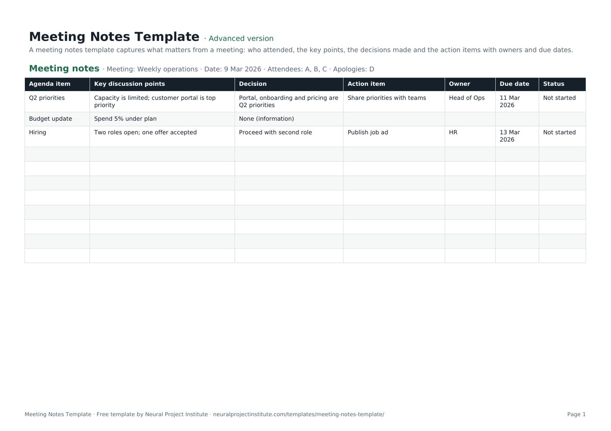

Templates · Meetings & productivity
Meeting Notes Template with Action Items
This free meeting notes template gives every agenda item its own row, with separate columns for the key discussion points, the decision, the action, the owner, the due date and the status. Download it for Google Sheets, Excel or PDF and use it for team meetings, project meetings or as a simple minutes of meeting template.

Key takeaways
- Good meeting notes record outcomes, not conversations: decisions and actions matter more than who said what.
- Keep decisions and actions in their own columns so nobody has to search the discussion to find them.
- Every action needs one owner and a due date. Track its status until it is done.
- Agree a note-taker before the meeting and send the notes within 24 hours.
- Meeting notes are less formal than minutes; for boards and committees, record motions and votes as well.
Free download · no sign-up
Get the meeting notes template
Pick your level and format: Google Sheets, Excel or a print-ready PDF. Spreadsheets include dropdowns, formulas and sample rows you can overwrite.
What are meeting notes?
Meeting notes are a short written record of a meeting: who attended, the main points discussed for each agenda item, the decisions made and the action items agreed, each with an owner and a due date. They give attendees and absent colleagues a shared, reliable account of what was agreed and what happens next.
Notes matter because memory is unreliable and meetings are expensive. Without a record, decisions get reopened, actions are forgotten and people leave with different versions of what was agreed. A consistent format solves most of this: everyone knows where to look for decisions and their own actions.
Meeting notes sit between the meeting agenda, which plans the meeting, and your project tracker or action plan, where the actions are followed through.
Meeting notes template preview
This is the first (and only) tab of the template, with three sample agenda items from a weekly operations meeting. Replace them with your own.
| Agenda item | Key discussion points | Decision | Action item | Owner | Due date | Status |
|---|---|---|---|---|---|---|
| Q2 priorities | Capacity is limited; customer portal is top priority | Portal, onboarding and pricing are Q2 priorities | Share priorities with teams | Head of Ops | 11 Mar 2026 | Not started |
| Budget update | Spend 5% under plan | None (information) | ||||
| Hiring | Two roles open; one offer accepted | Proceed with second role | Publish job ad | HR | 13 Mar 2026 | Not started |
Sample rows are examples: replace them with your own.
What's in the meeting notes template
The template is a single-tab table designed to be filled in during the meeting and shared straight afterwards.
- Meeting notes: Agenda item, Key discussion points, Decision, Action item, Owner, Due date, Status
The header line at the top of the sheet holds the meeting details: meeting name, date, attendees and apologies. Below it, each row is one agenda item with these columns:
| Column | What to write |
|---|---|
| Agenda item | The topic, copied from the agenda |
| Key discussion points | Two or three short points: the facts, options and concerns raised |
| Decision | What was decided, or "None (information)" if it was an update only |
| Action item | The next step, starting with a verb |
| Owner | One named person responsible for the action |
| Due date | When the action will be done |
| Status | Not started, In progress, On hold, Blocked or Done |
Which version should you download?
| Version | What you get | Best for |
|---|---|---|
| Beginner | One tab with six essential columns: Agenda item, Key discussion points, Action item, Owner, Due date and Status | Quick, informal team meetings |
| Advanced | All seven columns including Decision, with a Status dropdown | Most project and team meetings |
| Expert | Everything in Advanced, plus an instructions tab, a dashboard that counts actions by owner and by status automatically, status colours, overdue due dates highlighted in red until the action is Done, and a revision history tab | Recurring meetings where you track actions across weeks |
What to include in meeting notes
Whatever format you use, meeting notes should answer three questions: what did we discuss, what did we decide, and who is doing what by when? These are the elements to capture.
| Element | Why it matters |
|---|---|
| Meeting name, date and time | Lets people find the right notes later |
| Attendees and apologies | Shows who was part of the decisions and who needs a catch-up |
| Agenda items | Gives the notes the same structure as the meeting |
| Key discussion points | Records the context behind decisions, briefly |
| Decisions | The most important output; stops topics being reopened |
| Action items, owners and due dates | Turns the meeting into progress |
| Open questions and parked items | Makes sure nothing is lost; carry them to the next agenda |
| Links to documents | Points to slides, reports or files discussed |
| Next meeting date | Sets the point at which actions will be reviewed |
You do not need to record everything that was said. Aim for notes someone who missed the meeting could read in two minutes.
How to take meeting notes
Good notes start before the meeting and finish after it. Follow these steps.
Before the meeting
- Agree who takes the notes. Name a note-taker in the agenda. It works best when this is not the person chairing.
- Prepare the template. Copy the agenda items into the Agenda item column and fill in the meeting name, date and invited attendees.
- Review open actions. Bring forward unfinished actions from the last meeting so they can be checked.
During the meeting
- Record attendance. Update attendees and apologies at the start.
- Summarise, do not transcribe. For each item, note the key points in a few words: facts, options and concerns.
- Write decisions in their own column. If a decision is unclear, ask the chair to confirm it before moving on: "So we have agreed to…?"
- Capture every action with an owner and a date. If nobody takes an action, flag it before the item closes.
- Park off-topic items. Note them separately for a future agenda.
After the meeting
- Tidy the notes the same day. Fix shorthand and check names, numbers and dates.
- Check with the chair if a decision or action is ambiguous.
- Send the notes within 24 hours to attendees and anyone who needs to act. Put decisions and actions at the top of the email.
- Track actions until they are done, and review them at the start of the next meeting.
Meeting notes example
Here is how a short weekly project status meeting might look in the template. Notice that discussion, decisions and actions are kept apart.
Meeting: Website relaunch weekly status · Date: 6 October · Attendees: Project manager, design lead, developer, marketing lead · Apologies: Sponsor
| Agenda item | Key discussion points | Decision | Action item | Owner | Due date | Status |
|---|---|---|---|---|---|---|
| Progress since last week | Homepage design signed off; product pages 60% built | None (information) | ||||
| Launch date risk | Content for 12 product pages is late; launch at risk by about a week | Launch with available pages; add the rest within two weeks | Confirm reduced launch scope with sponsor | Project manager | 8 Oct | Not started |
| Cookie banner | Legal asked for a new consent option | Raise a change request | Complete change request form | Developer | 9 Oct | In progress |
| Launch email | Draft ready; needs final screenshots | Send on launch day | Add final screenshots to email | Marketing lead | 13 Oct | Not started |
The follow-up email can then be very short: one line of context, the decisions as a bullet list, the actions with owners and dates, a link to the full notes and the next meeting date.
The cookie banner item shows how meeting notes connect to other project documents: the decision to raise a change request is recorded here, and the change itself is assessed in the change request template.
Meeting notes vs meeting minutes
The terms are often used interchangeably, and this template works for both in most workplaces. The difference is formality.
| Meeting notes | Meeting minutes | |
|---|---|---|
| Purpose | Practical record to keep work moving | Official record of proceedings |
| Typical meetings | Team, project, status, one-to-one | Boards, committees, AGMs, councils, governance bodies |
| Content | Key points, decisions, actions | Attendance, quorum, motions, who proposed and seconded them, votes and resolutions |
| Style | Brief and informal | Formal, neutral, often in a set format |
| Approval | Usually just shared | Usually approved at the next meeting and signed |
Robert's Rules of Order, a widely used guide to formal meeting procedure, says minutes should be mainly a record of what was done at a meeting, not what was said by the members. That is good advice for informal notes too.
If you need formal minutes, add the meeting details your organisation requires (quorum, motions and votes) to the header line and Decision column, and record approval of the previous minutes as the first agenda item.
How to turn meeting notes into action items
Actions are what make a meeting worth holding. Write them so they are easy to complete and easy to check.
- Start with a verb: Send, Draft, Approve, Book, Confirm.
- One owner per action. "The team" is not an owner. If several people are involved, name the person who will make sure it happens.
- A real due date, not "ASAP" or "next week".
- Specific enough to know when it is done: "Send revised budget to sponsor", not "Look at budget".
- Review open actions first at the next meeting and update the Status column.
For actions that run beyond the next meeting, or that belong to a wider plan, move them into an action plan template or your project tracker. Issues and risks raised in the meeting belong in a RAID log or issue log, so they are managed rather than just noted.
Using the template for different project meetings
The same columns work for most meetings; what changes is where you put the emphasis.
| Meeting | What to focus on in the notes |
|---|---|
| Project status meeting | Progress, risks, decisions and actions; feed key points into your project status report |
| Kick-off or steering meeting | Decisions, approvals and escalations; link them to your project governance records |
| Daily stand-up / Daily Scrum | Usually no formal notes; record only blockers and follow-ups. See our Daily Scrum guide |
| Sprint review | Feedback on the increment and changes to the Product Backlog. See the sprint review guide |
| Retrospective | Improvement actions with owners; use the sprint retrospective template |
| Project close or lessons learned | What to repeat and what to change; use the lessons learned template |
| One-to-one | Agreed actions and follow-ups; keep personal or sensitive points out of shared files |
Our guide to Agile meetings and ceremonies explains the purpose of each Agile meeting in more detail.
Tips and common mistakes
Tips
- Separate decisions from discussion. It is the single biggest improvement most teams can make.
- Keep notes factual and neutral. Record what was agreed, not opinions about who said it.
- Use the same template every time so people know where to look.
- Share notes where the team works, such as a shared drive or your project management tool, not only by email.
- Rotate the note-taker on recurring meetings so it does not always fall to the same person.
Mistakes to avoid
- Writing a transcript instead of a summary.
- Actions with no owner, or with "everyone" as owner.
- Vague decisions such as "discussed budget".
- Sending notes days later, when details are forgotten.
- Never reviewing actions, so the same items return meeting after meeting.
Meeting notes are one part of how a project keeps people informed.
Related templates and guides
Plan the meeting with the meeting agenda template, record it with this template, and follow actions through with the action plan or project tracker template. The communication plan template sets which meetings you hold and who attends.
 Action Plan TemplateFree action plan template with goal, actions, owners, deadlines, resources, success…Beginner · Advanced · Expert
Action Plan TemplateFree action plan template with goal, actions, owners, deadlines, resources, success…Beginner · Advanced · Expert Lessons Learned TemplateFree lessons learned template to capture what went well, what didn't, root causes and…Beginner · Advanced · Expert
Lessons Learned TemplateFree lessons learned template to capture what went well, what didn't, root causes and…Beginner · Advanced · Expert Meeting Agenda TemplateFree meeting agenda template with objective, timed items, owners, outcomes and…Beginner · Advanced · Expert
Meeting Agenda TemplateFree meeting agenda template with objective, timed items, owners, outcomes and…Beginner · Advanced · Expert To-Do List TemplateFree to-do list template with priority, due date, category and status, plus a weekly…Beginner · Advanced · Expert
To-Do List TemplateFree to-do list template with priority, due date, category and status, plus a weekly…Beginner · Advanced · Expert Event Planning TemplateFree event planning template with task checklist, timeline, owners, budget tracker and…Beginner · Advanced · Expert
Event Planning TemplateFree event planning template with task checklist, timeline, owners, budget tracker and…Beginner · Advanced · ExpertFrequently asked questions
What is a meeting notes template?
A meeting notes template is a ready-made format for recording a meeting: date, attendees, agenda items, key discussion points, decisions and action items with owners and due dates.
Is this meeting notes template free?
Yes. The meeting notes template is free to download in Google Sheets, Excel and PDF, with no sign-up.
What should be included in meeting notes?
The meeting name and date, attendees and apologies, each agenda item with brief discussion points, the decisions made, action items with one owner and a due date, open questions and the next meeting date.
What is the difference between meeting notes and meeting minutes?
Meeting notes are an informal, practical record of key points, decisions and actions. Minutes are a formal record, usually for boards and committees, that also captures motions, votes and resolutions and is approved at the next meeting.
Can I use this template as a minutes of meeting template?
Yes. It works well for most workplace minutes. For formal minutes, add quorum, motions and votes to the header line and Decision column, and approve the previous minutes as your first agenda item.
How do you write good meeting notes?
Summarise rather than transcribe, keep decisions and actions in their own columns, give every action one owner and a due date, and check unclear decisions with the chair before moving on.
Who should take meeting notes?
A named note-taker agreed before the meeting. Ideally it is not the person chairing, and on recurring meetings the role can rotate.
How soon should meeting notes be sent?
Within 24 hours, while details are fresh. Put decisions and actions at the top of the email and link to the full notes.
How do I record action items in meeting notes?
Start each action with a verb, assign one owner, set a due date and track its status. Review open actions at the start of the next meeting.
Can I take notes while running the meeting?
You can for small meetings, but it is harder to facilitate and write at the same time. Capture only decisions and actions live, confirm them out loud, and tidy the notes straight afterwards.
Can I use AI to take meeting notes?
Yes, many tools can transcribe and summarise meetings. Tell attendees before recording, follow your organisation's policy and check the summary, especially decisions and action owners, before sending it.
Can I use the meeting notes template in Excel or Google Sheets?
Yes. Download the .xlsx file for Excel or make a copy in Google Sheets and share it with attendees. The PDF version is for printing.
What is the difference between a meeting agenda and meeting notes?
The meeting agenda template plans the meeting before it happens; meeting notes record what was discussed, decided and agreed afterwards.